Квартира 103 м² · ретро с авторской мебелью
Листов: 134 · блокеров: 0 · замечаний: 391
01-decorator-cover.svg — Титульный лист (decorator)
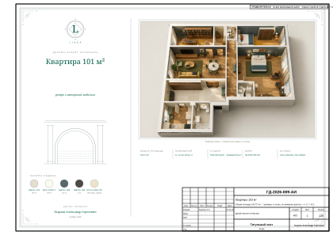
02-draftsman-general.svg — Общие данные (draftsman)
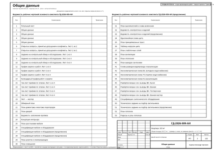
03-draftsman-general-2.svg — Общие данные (draftsman)
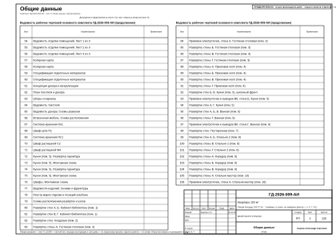
04-draftsman-general-3.svg — Общие данные (draftsman)
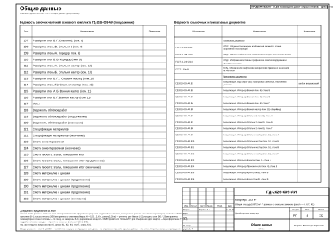
05-draftsman-general-4.svg — Общие данные (draftsman)
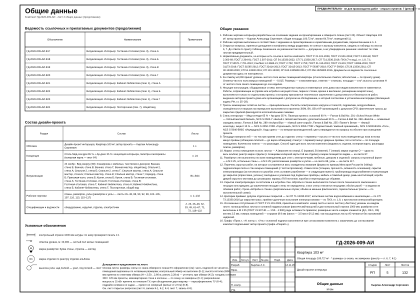
06-foreman-open-issues.svg — Открытые вопросы, принятые допущения и конфликты. Лист 1 из 2 (foreman)

07-foreman-open-issues-2.svg — Открытые вопросы, принятые допущения и конфликты. Лист 2 из 2 (foreman)
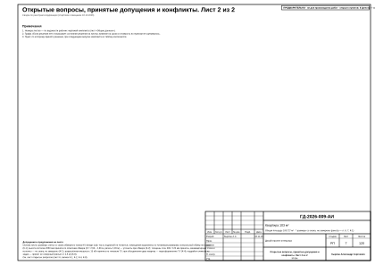
08-foreman-survey-task.svg — Задание на контрольный обмер и обследование. Лист 1 из 3 (foreman)
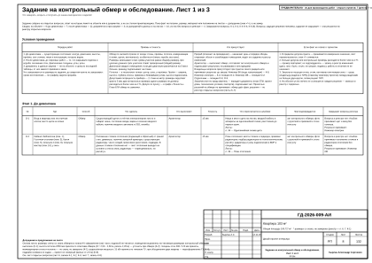
09-foreman-survey-task-2.svg — Задание на контрольный обмер и обследование. Лист 2 из 3 (foreman)
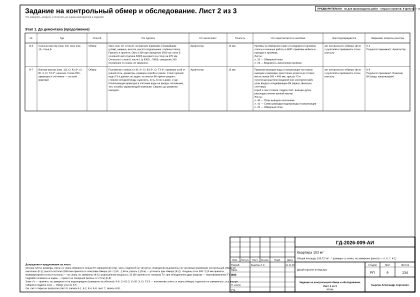
10-foreman-survey-task-3.svg — Задание на контрольный обмер и обследование. Лист 3 из 3 (foreman)
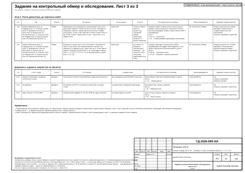
11-foreman-procurement.svg — График закупок и работ. Лист 1 из 3 (foreman)
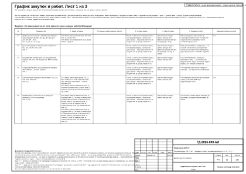
12-foreman-procurement-2.svg — График закупок и работ. Лист 2 из 3 (foreman)
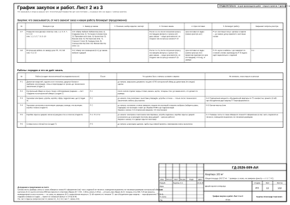
13-foreman-procurement-3.svg — График закупок и работ. Лист 3 из 3 (foreman)
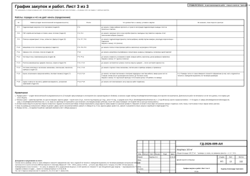
14-foreman-calendar.svg — Календарный график работ и закупок (foreman)
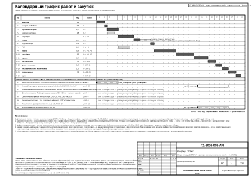
15-foreman-acceptance.svg — Чек-лист приёмки по этапам. Лист 1 из 4 (foreman)
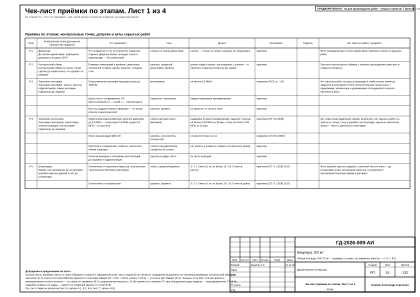
16-foreman-acceptance-2.svg — Чек-лист приёмки по этапам. Лист 2 из 4 (foreman)
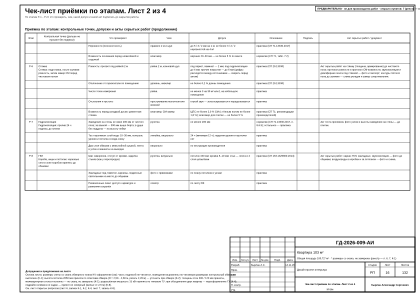
17-foreman-acceptance-3.svg — Чек-лист приёмки по этапам. Лист 3 из 4 (foreman)
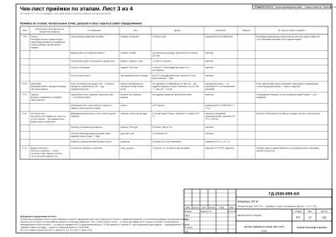
18-foreman-acceptance-4.svg — Чек-лист приёмки по этапам. Лист 4 из 4 (foreman)
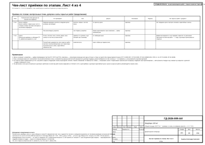
19-foreman-masters.svg — Лист → мастер (foreman)
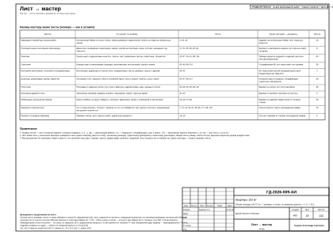
20-architect-obmer.svg — Обмерный план (architect)
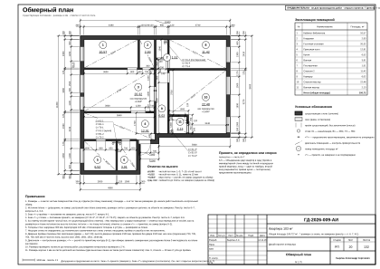
21-architect-demolition.svg — План демонтажа и монтажа перегородок (architect)

22-architect-doors.svg — План дверей (architect)
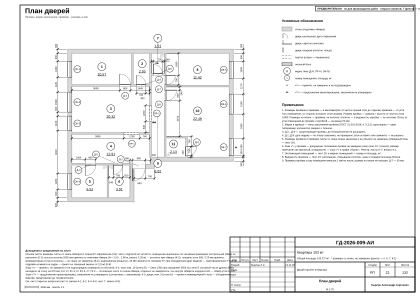
23-architect-doors-schedule.svg — Ведомость заполнения проёмов (architect)
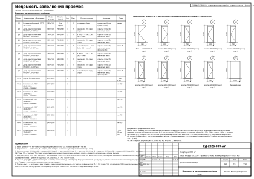
24-interior-designer-concept.svg — Концепция интерьера (interior-designer)

25-interior-designer-furniture.svg — План расстановки мебели (interior-designer)
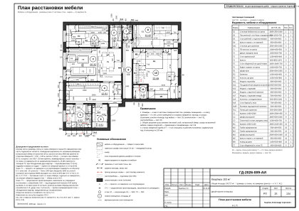
26-interior-designer-spec.svg — Спецификация мебели и оборудования (interior-designer)
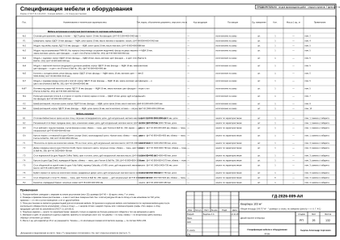
27-interior-designer-spec-2.svg — Спецификация мебели и оборудования (продолжение) (interior-designer)
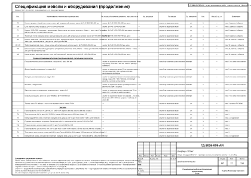
28-interior-designer-spec-3.svg — Спецификация мебели и оборудования (продолжение) (interior-designer)
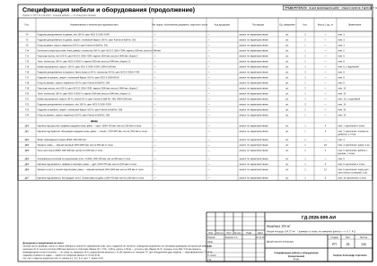
29-electrical-engineer-sockets.svg — План розеток и электровыводов (electrical-engineer)
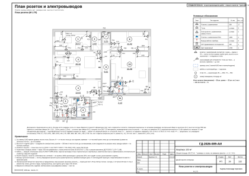
30-electrical-engineer-lighting.svg — План освещения (electrical-engineer)
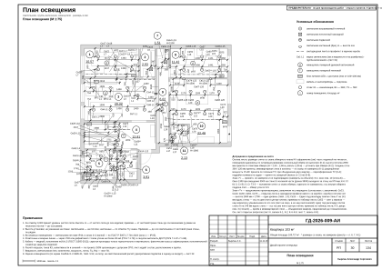
31-electrical-engineer-switches.svg — План выключателей и схема включения (electrical-engineer)
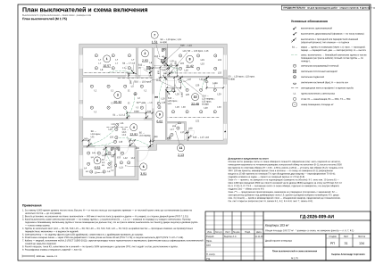
32-electrical-engineer-schedule.svg — Ведомость электроточек и изделий (electrical-engineer)
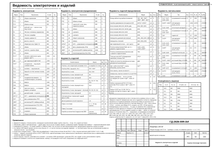
33-electrical-engineer-schedule-2.svg — Ведомость электроточек и изделий (продолжение) (electrical-engineer)
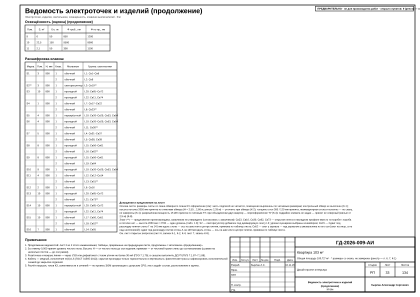
34-electrical-engineer-panel.svg — Однолинейная схема щита (electrical-engineer)

35-electrical-engineer-routing.svg — План принципиальных трасс (electrical-engineer)
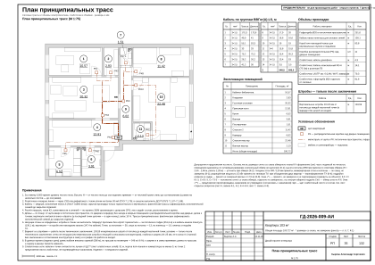
36-electrical-engineer-loads.svg — Таблица нагрузок щита (electrical-engineer)
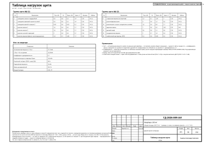
37-electrical-engineer-low-current.svg — План слаботочных сетей (electrical-engineer)
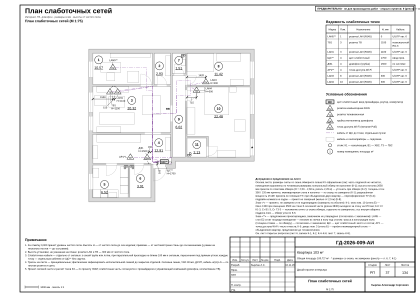
38-hvac-engineer-ventilation.svg — План вентиляции (hvac-engineer)
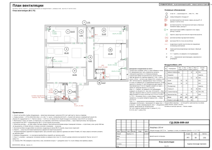
39-hvac-engineer-heating.svg — План отопления (hvac-engineer)
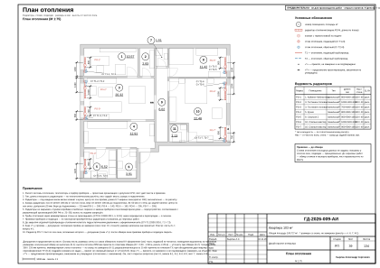
40-plumbing-engineer-vyvody.svg — План выводов сантехники (plumbing-engineer)
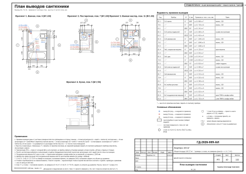
41-plumbing-engineer-razvodka.svg — Схема разводки водопровода и канализации (plumbing-engineer)
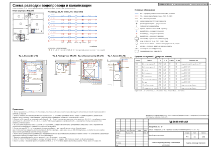
42-plumbing-engineer-axon-v1.svg — Аксонометрическая схема В1 (холодное водоснабжение) (plumbing-engineer)
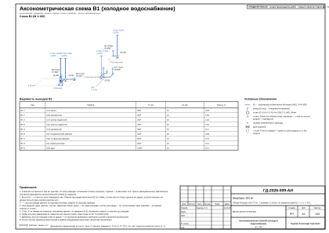
43-plumbing-engineer-axon-t3.svg — Аксонометрическая схема Т3 (горячее водоснабжение) (plumbing-engineer)
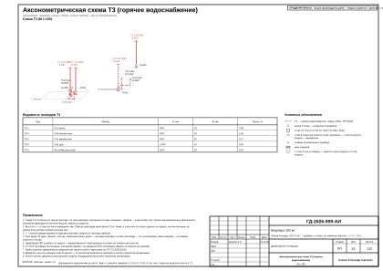
44-plumbing-engineer-axon-k1.svg — Аксонометрическая схема К1 (канализация) (plumbing-engineer)
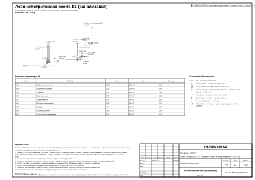
45-plumbing-engineer-vk-walls-5.svg — Развёртки мокрых зон: выводы ВК. Кухня (plumbing-engineer)
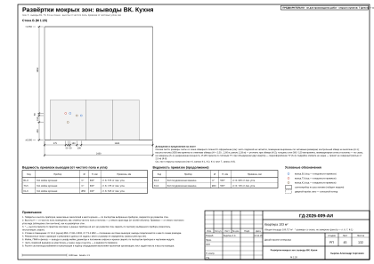
46-plumbing-engineer-vk-walls-6.svg — Развёртки мокрых зон: выводы ВК. Ванная (plumbing-engineer)
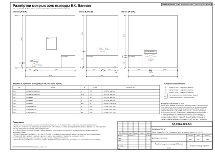
47-plumbing-engineer-vk-walls-7.svg — Развёртки мокрых зон: выводы ВК. Постирочная (plumbing-engineer)
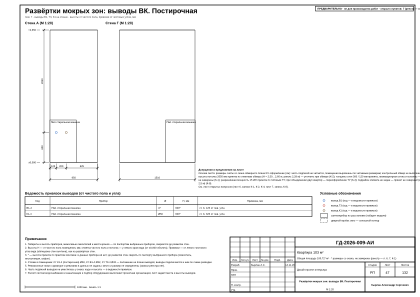
48-plumbing-engineer-vk-walls-11.svg — Развёртки мокрых зон: выводы ВК. Ванная мастер (plumbing-engineer)
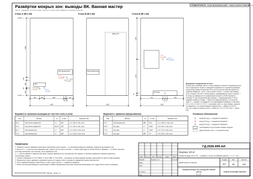
49-plumbing-engineer-spec-equipment.svg — Спецификация сантехнического оборудования (plumbing-engineer)
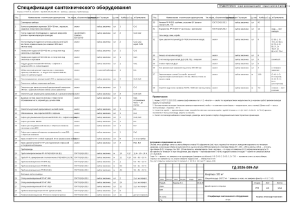
50-lighting-designer-lighting-spec.svg — Техническое задание на подбор светильников (lighting-designer)
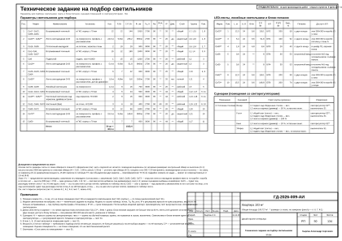
51-lighting-designer-lighting-spec-2.svg — Техническое задание на подбор светильников (продолжение) (lighting-designer)
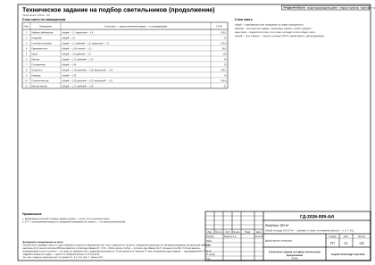
52-drywall-installer-ceiling.svg — План потолков (drywall-installer)
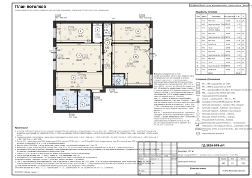
53-drywall-installer-ceiling-sections.svg — Разрезы и узлы потолков (drywall-installer)
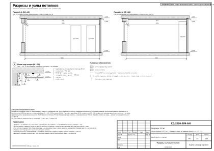
54-drywall-installer-ceiling-sections-2.svg — Разрезы и узлы потолков (продолжение) (drywall-installer)
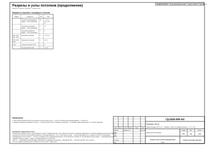
55-drywall-installer-ceiling-sections-3.svg — Сечения потолков М 1:10 (drywall-installer)
56-tiler-tile-floors.svg — Раскладка плитки. Планы полов (tiler)
57-tiler-tile-extra.svg — Раскладка плитки. Прихожая-холл (tiler)
58-tiler-tile-walls-r6.svg — Раскладка плитки. Ванная. Развёртки стен (tiler)
59-tiler-tile-walls-r11.svg — Раскладка плитки. Ванная мастер. Развёртки стен (tiler)
60-finisher-floors.svg — План полов (finisher)
61-finisher-finish-schedule.svg — Ведомость отделки помещений. Лист 1 из 3 (finisher)
62-finisher-finish-schedule-2.svg — Ведомость отделки помещений. Лист 2 из 3 (finisher)
63-finisher-finish-schedule-3.svg — Ведомость отделки помещений. Лист 3 из 3 (finisher)
64-colorist-color-card.svg — Колерная карта (colorist)
65-colorist-color-card-2.svg — Колерная карта (colorist)
66-colorist-materials-spec.svg — Спецификация отделочных материалов (colorist)
67-colorist-materials-spec-2.svg — Спецификация отделочных материалов (colorist)
68-decorator-decor-concept.svg — Концепция декора и визуализации (decorator)
69-decorator-decor-plan.svg — План текстиля и декора (decorator)
70-decorator-curtains.svg — Шторы и карнизы (decorator)
71-decorator-textile-schedule.svg — Ведомость текстиля (decorator)
72-decorator-decor-schedule.svg — Ведомость декора. Схемы развески (decorator)
73-furniture-maker-furn-plan.svg — Встроенная мебель. Схема расположения (furniture-maker)
74-furniture-maker-furn-kl1.svg — Система хранения Кл1 (furniture-maker)
75-furniture-maker-furn-p1.svg — Шкаф-купе П1 (furniture-maker)
76-furniture-maker-furn-ps1.svg — Система хранения Пс1 (furniture-maker)
77-furniture-maker-furn-s2.svg — Шкаф распашной С2 (furniture-maker)
78-furniture-maker-furn-m4.svg — Шкаф распашной М4 (furniture-maker)
79-furniture-maker-furn-kitchen-5b.svg — Кухня (пом. 5). Развёртка гарнитура (furniture-maker)

80-furniture-maker-furn-kitchen-5b-mount.svg — Кухня (пом. 5). Монтажная схема (furniture-maker)
81-furniture-maker-furn-kitchen-5c.svg — Кухня (пом. 5). Развёртка гарнитура (furniture-maker)
82-furniture-maker-furn-kitchen-5c-mount.svg — Кухня (пом. 5). Монтажная схема (furniture-maker)
83-furniture-maker-furn-worktop-5.svg — Кухня (пом. 5). Столешница: план (furniture-maker)
84-furniture-maker-furn-mount.svg — Шкафы. Монтажная схема (furniture-maker)
85-furniture-maker-furn-schedule.svg — Ведомости изделий, техники и фурнитуры (furniture-maker)
86-furniture-maker-furn-sheetmat.svg — Сводка листовых материалов и кромки (furniture-maker)
87-draftsman-registers.svg — Реестр марок отделки и позиций альбома (draftsman)
88-draftsman-elev-key.svg — Схема расположения развёрток и узлов (draftsman)
89-draftsman-elev-r1-1.svg — Развёртка стены А. Кабинет-библиотека (пом. 1) (draftsman)

90-draftsman-elev-r1-2.svg — Развёртки стен Б, В. Кабинет-библиотека (пом. 1) (draftsman)
91-draftsman-elev-r1-3.svg — Развёртка стены Г. Кабинет-библиотека (пом. 1) (draftsman)
92-draftsman-elev-r2.svg — Развёртки стен. Кладовая (пом. 2) (draftsman)
93-draftsman-elev-r3-1.svg — Развёртка стены А. Гостиная-столовая (пом. 3) (draftsman)

94-draftsman-elev-r3-2.svg — Развёртка стены Б. Гостиная-столовая (пом. 3) (draftsman)
95-draftsman-elev-r3-3.svg — Развёртка стены В. Гостиная-столовая (пом. 3) (draftsman)
96-draftsman-elev-r3-4.svg — Развёртка стены Г. Гостиная-столовая (пом. 3) (draftsman)
97-draftsman-elev-r4-1.svg — Развёртка стены А. Прихожая-холл (пом. 4) (draftsman)
98-draftsman-elev-r4-2.svg — Развёртка стены Б. Прихожая-холл (пом. 4) (draftsman)
99-draftsman-elev-r4-3.svg — Развёртка стены В. Прихожая-холл (пом. 4) (draftsman)
100-draftsman-elev-r4-4.svg — Развёртка стены Г. Прихожая-холл (пом. 4) (draftsman)
101-draftsman-elev-r5-1.svg — Развёртка стены Б. Кухня (пом. 5), кухонный фронт (draftsman)
102-draftsman-elev-r5-2.svg — Развёртка стены В. Кухня (пом. 5), кухонный фронт (draftsman)
103-draftsman-elev-r5-3.svg — Развёртки стен А, Г. Кухня (пом. 5) (draftsman)
104-draftsman-elev-r6-1.svg — Развёртки стен А, Б. Ванная (пом. 6) (draftsman)
105-draftsman-elev-r6-2.svg — Развёртки стен В, Г. Ванная (пом. 6) (draftsman)
106-draftsman-elev-r7.svg — Развёртки стен. Постирочная (пом. 7) (draftsman)
107-draftsman-elev-r8-1.svg — Развёртка стены А. Спальня 2 (пом. 8) (draftsman)
108-draftsman-elev-r8-2.svg — Развёртка стены Б. Спальня 2 (пом. 8) (draftsman)
109-draftsman-elev-r8-3.svg — Развёртка стены В. Спальня 2 (пом. 8) (draftsman)
110-draftsman-elev-r8-4.svg — Развёртка стены Г. Спальня 2 (пом. 8) (draftsman)
111-draftsman-elev-r9-1.svg — Развёртка стены А. Коридор (пом. 9) (draftsman)
112-draftsman-elev-r9-2.svg — Развёртки стен Б, В. Коридор (пом. 9) (draftsman)
113-draftsman-elev-r10-1.svg — Развёртка стены А. Спальня мастер (пом. 10) (draftsman)
114-draftsman-elev-r10-2.svg — Развёртка стены Б. Спальня мастер (пом. 10) (draftsman)
115-draftsman-elev-r10-3.svg — Развёртки стен В, Г1. Спальня мастер (пом. 10) (draftsman)
116-draftsman-elev-r10-4.svg — Развёртка стены Г2. Спальня мастер (пом. 10) (draftsman)
117-draftsman-elev-r11-1.svg — Развёртки стен А, Б. Ванная мастер (пом. 11) (draftsman)
118-draftsman-elev-r11-2.svg — Развёртки стен В, Г. Ванная мастер (пом. 11) (draftsman)
119-draftsman-nodes.svg — Узлы (draftsman)
120-estimator-boq.svg — Ведомость объёмов работ (estimator)
121-estimator-boq-2.svg — Ведомость объёмов работ (продолжение) (estimator)
122-estimator-boq-3.svg — Ведомость объёмов работ (окончание) (estimator)
123-estimator-spec.svg — Спецификация материалов (estimator)
124-estimator-spec-2.svg — Спецификация материалов (окончание) (estimator)
125-estimator-estimate.svg — Смета ориентировочная (estimator)
126-estimator-estimate-2.svg — Смета ориентировочная (окончание) (estimator)
127-estimator-total.svg — Смета проекта: этапы, помещения, итог (estimator)
128-estimator-total-2.svg — Смета проекта: этапы, помещения, итог (продолжение) (estimator)
129-estimator-total-3.svg — Смета проекта: этапы, помещения, итог (окончание) (estimator)
130-estimator-matprice.svg — Смета материалов с ценами (estimator)
131-estimator-matprice-2.svg — Смета материалов с ценами (продолжение) (estimator)
132-estimator-matprice-3.svg — Смета материалов с ценами (продолжение) (estimator)
133-estimator-matprice-4.svg — Смета материалов с ценами (продолжение) (estimator)
134-estimator-matprice-5.svg — Смета материалов с ценами (окончание) (estimator)